This is first part of the "Using ASP.NET Core, Entity Framework Core and ASP.NET Boilerplate to Create NLayered Web Application" article series. See other parts:
In this article, I'll show to create a simple cross platform layered web application using the following tools:
I will also use Log4Net and AutoMapper which are included in ABP startup template by default. We will use the following techniques:
The project will be developed here is a simple task management application where tasks can be assigned to people. Instead of developing the application layer by layer, I will go to vertical and change the layers as the application grows. While the application grows, I will introduce some features of ABP and other frameworks as needed.
Following tools should be installed in your machine to be able to run/develop the sample application:
I used ABP's startup template (http://www.aspnetboilerplate.com/Templates) to create a new web application named "Acme.SimpleTaskApp". Company name ("Acme" here) is optional while creating templates. I also selected Multi Page Web Application since I don't want to use SPA in this article and I disabled Authentication since I want the most basic startup template:
It creates a layered solution as shown below:
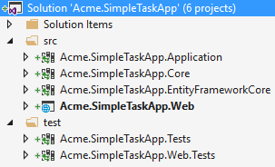
It includes 6 projects starting with the name that I entered as the project name:
When you run the application, you can see the user interface of the template:
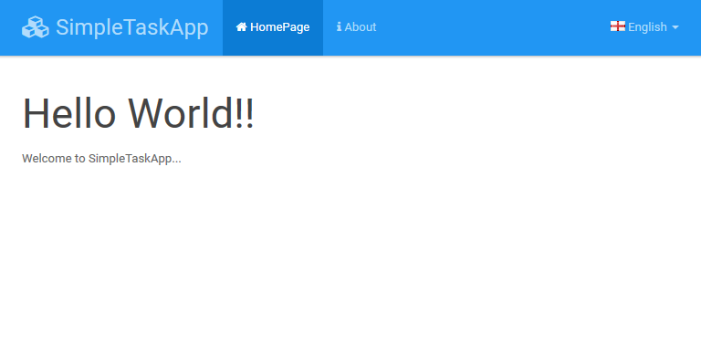
It contains a top menu, empty Home and About pages and a language switch dropdown.
I want to start with a simple Task entity. Since an entity is part of the domain layer, I added it into the .Core project:
using System;
using System.ComponentModel.DataAnnotations;
using System.ComponentModel.DataAnnotations.Schema;
using Abp.Domain.Entities;
using Abp.Domain.Entities.Auditing;
using Abp.Timing;
namespace Acme.SimpleTaskApp.Tasks
{
[Table("AppTasks")]
public class Task : Entity, IHasCreationTime
{
public const int MaxTitleLength = 256;
public const int MaxDescriptionLength = 64 * 1024; //64KB
[Required]
[StringLength(MaxTitleLength)]
public string Title { get; set; }
[StringLength(MaxDescriptionLength)]
public string Description { get; set; }
public DateTime CreationTime { get; set; }
public TaskState State { get; set; }
public Task()
{
CreationTime = Clock.Now;
State = TaskState.Open;
}
public Task(string title, string description = null)
: this()
{
Title = title;
Description = description;
}
}
public enum TaskState : byte
{
Open = 0,
Completed = 1
}
}
.EntityFrameworkCore project includes a pre-defined DbContext. I should add a DbSet for the Task entity into the DbContext:
public class SimpleTaskAppDbContext : AbpDbContext
{
public DbSet<Task> Tasks { get; set; }
public SimpleTaskAppDbContext(DbContextOptions<SimpleTaskAppDbContext> options)
: base(options)
{
}
}
Now, EF Core knows that we have a Task entity.
We will create an initial database migration to create database and the AppTasks table. I open the Package Manager Console from Visual Studio and run the Add-Migration command (Default project must be the .EntityFrameworkCore project):
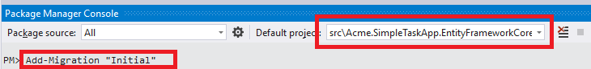
This command creates a Migrations folder in the .EntityFrameworkCore project which includes a migration class and a snapshot of our database model:
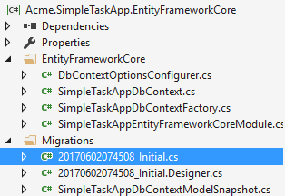
Automatically generated "Initial" migration class is shown below:
public partial class Initial : Migration
{
protected override void Up(MigrationBuilder migrationBuilder)
{
migrationBuilder.CreateTable(
name: "AppTasks",
columns: table => new
{
Id = table.Column<int>(nullable: false)
.Annotation("SqlServer:ValueGenerationStrategy", SqlServerValueGenerationStrategy.IdentityColumn),
CreationTime = table.Column<DateTime>(nullable: false),
Description = table.Column<string>(maxLength: 65536, nullable: true),
State = table.Column<byte>(nullable: false),
Title = table.Column<string>(maxLength: 256, nullable: false)
},
constraints: table =>
{
table.PrimaryKey("PK_AppTasks", x => x.Id);
});
}
protected override void Down(MigrationBuilder migrationBuilder)
{
migrationBuilder.DropTable(
name: "AppTasks");
}
}
This code is used to create AppTasks table when we execute the migrations to the database (see entity framework documentation for more information on migrations).
To create the database, I run Update-Database command from Package Manager Console:
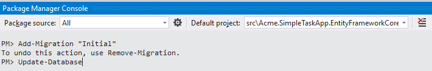
This command created a database named SimpleTaskAppDb in the local SQL Server and executed migrations (currently, there is a single, "Initial", migration):
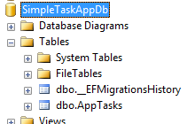
Now, I have a Task entity and corresponding table in the database. I entered a few sample Tasks to the table:

Note that, the database connection string is defined in appsettings.json in the .Web application.
Application Services are used to expose domain logic to the presentation layer. An Application Service is called from presentation layer with a Data Transfer Object (DTO) as parameter (if needed), uses domain objects to perform some specific business logic and returns a DTO back to the presentation layer (if needed).
I'm creating the first application service, TaskAppService, into the .Application project to perform task related application logic. First, I wanted to define an interface for the app service:
public interface ITaskAppService : IApplicationService
{
Task<ListResultDto<TaskListDto>> GetAll(GetAllTasksInput input);
}
Defining an interface is not required, but suggested. By convention, all app services should implement IApplicationService interface in ABP (it's just an empty marker interface). I created a GetAll method to query tasks. To do that, I also defined the following DTOs:
public class GetAllTasksInput
{
public TaskState? State { get; set; }
}
[AutoMapFrom(typeof(Task))]
public class TaskListDto : EntityDto, IHasCreationTime
{
public string Title { get; set; }
public string Description { get; set; }
public DateTime CreationTime { get; set; }
public TaskState State { get; set; }
}
Now, we can implement the ITaskAppService as shown below:
using System.Collections.Generic;
using System.Linq;
using System.Threading.Tasks;
using Abp.Application.Services.Dto;
using Abp.Domain.Repositories;
using Abp.Linq.Extensions;
using Acme.SimpleTaskApp.Tasks.Dtos;
using Microsoft.EntityFrameworkCore;
namespace Acme.SimpleTaskApp.Tasks
{
public class TaskAppService : SimpleTaskAppAppServiceBase, ITaskAppService
{
private readonly IRepository<Task> _taskRepository;
public TaskAppService(IRepository<Task> taskRepository)
{
_taskRepository = taskRepository;
}
public async Task<ListResultDto<TaskListDto>> GetAll(GetAllTasksInput input)
{
var tasks = await _taskRepository
.GetAll()
.WhereIf(input.State.HasValue, t => t.State == input.State.Value)
.OrderByDescending(t => t.CreationTime)
.ToListAsync();
return new ListResultDto<TaskListDto>(
ObjectMapper.Map<List<TaskListDto>>(tasks)
);
}
}
}
Before going further to create user interface, I want to test TaskAppService. You can skip this section if you don't interest in automated testing.
Startup template contains .Tests project to test our code. It uses EF Core's InMemory database provider instead of SQL Server. Thus, our unit tests can work without a real database. It creates a separated database for each test. Thus, tests are isolated from each other. We can use TestDataBuilder class to add some initial test data to InMemory database before running tests. I changed TestDataBuilder as shown below:
public class TestDataBuilder
{
private readonly SimpleTaskAppDbContext _context;
public TestDataBuilder(SimpleTaskAppDbContext context)
{
_context = context;
}
public void Build()
{
_context.Tasks.AddRange(
new Task("Follow the white rabbit", "Follow the white rabbit in order to know the reality."),
new Task("Clean your room") { State = TaskState.Completed }
);
}
}
You can see the sample project's source code to understand where and how TestDataBuilder is used. I added two tasks (one of them is completed) to the dbcontext. So, I can write my tests assuming that there are two Tasks in the database. My first integration test tests the TaskAppService.GetAll method we created above.
public class TaskAppService_Tests : SimpleTaskAppTestBase
{
private readonly ITaskAppService _taskAppService;
public TaskAppService_Tests()
{
_taskAppService = Resolve<ITaskAppService>();
}
[Fact]
public async System.Threading.Tasks.Task Should_Get_All_Tasks()
{
//Act
var output = await _taskAppService.GetAll(new GetAllTasksInput());
//Assert
output.Items.Count.ShouldBe(2);
}
[Fact]
public async System.Threading.Tasks.Task Should_Get_Filtered_Tasks()
{
//Act
var output = await _taskAppService.GetAll(new GetAllTasksInput { State = TaskState.Open });
//Assert
output.Items.ShouldAllBe(t => t.State == TaskState.Open);
}
}
I created two different tests to test GetAll method as shown above. Now, I can open Test Explorer (from Test\Windows\Test Explorer in the main menu of VS) and run the unit tests:
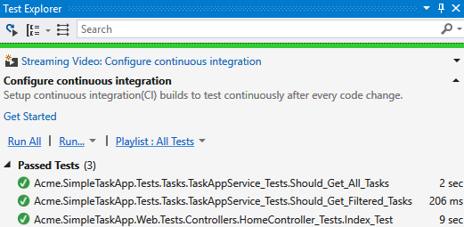
All of them succeed. The last one was a pre-built test in the startup template, which we can ignore for now.
Notice that; ABP startup template comes with xUnit and Shouldly installed by default. So, we used them to write our tests.
Now, I know that TaskAppService is properly working. I can start to create a page to list all tasks.
First, I'm adding a new item to the top menu:
public class SimpleTaskAppNavigationProvider : NavigationProvider
{
public override void SetNavigation(INavigationProviderContext context)
{
context.Manager.MainMenu
.AddItem(
new MenuItemDefinition(
"Home",
L("HomePage"),
url: "",
icon: "fa fa-home"
)
).AddItem(
new MenuItemDefinition(
"About",
L("About"),
url: "Home/About",
icon: "fa fa-info"
)
).AddItem(
new MenuItemDefinition(
"TaskList",
L("TaskList"),
url: "Tasks",
icon: "fa fa-tasks"
)
);
}
private static ILocalizableString L(string name)
{
return new LocalizableString(name, SimpleTaskAppConsts.LocalizationSourceName);
}
}
Startup template comes with two pages: Home and About, as shown above. We can change them or create new pages. I preferred to leave them for now and create a new menu item.
I'm creating a new controller class, TasksController, in the .Web project as shown below:
public class TasksController : SimpleTaskAppControllerBase
{
private readonly ITaskAppService _taskAppService;
public TasksController(ITaskAppService taskAppService)
{
_taskAppService = taskAppService;
}
public async Task<ActionResult> Index(GetAllTasksInput input)
{
var output = await _taskAppService.GetAll(input);
var model = new IndexViewModel(output.Items);
return View(model);
}
}
public class IndexViewModel
{
public IReadOnlyList<TaskListDto> Tasks { get; }
public IndexViewModel(IReadOnlyList<TaskListDto> tasks)
{
Tasks = tasks;
}
public string GetTaskLabel(TaskListDto task)
{
switch (task.State)
{
case TaskState.Open:
return "label-success";
default:
return "label-default";
}
}
}
This simple view model gets a list of tasks (which is provided from ITaskAppService) in it's constructor. It also has GetTaskLabel method that will be used in the view to select a Bootstrap label class for given task.
And finally, the Index view is shown below:
@model Acme.SimpleTaskApp.Web.Models.Tasks.IndexViewModel
@{
ViewBag.Title = L("TaskList");
ViewBag.ActiveMenu = "TaskList"; //Matches with the menu name in SimpleTaskAppNavigationProvider to highlight the menu item
}
<h2>@L("TaskList")</h2>
<div class="row">
<div>
<ul class="list-group" id="TaskList">
@foreach (var task in Model.Tasks)
{
<li class="list-group-item">
<span class="pull-right label @Model.GetTaskLabel(task)">@L($"TaskState_{task.State}")</span>
<h4 class="list-group-item-heading">@task.Title</h4>
<div class="list-group-item-text">
@task.CreationTime.ToString("yyyy-MM-dd HH:mm:ss")
</div>
</li>
}
</ul>
</div>
</div>
We simply used given model to render the view using Bootstrap's list group component. Here, we used IndexViewModel.GetTaskLabel() method to get label types for tasks. Rendered page will be like that:
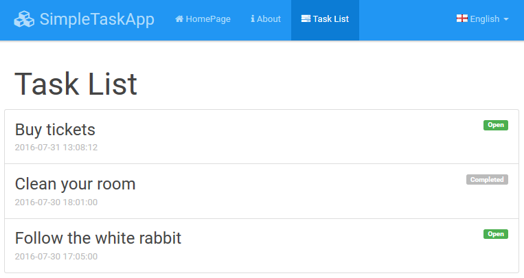
We used L method in the view which comes from ABP framework. It's used to localize strings. We have define localized strings in Localization/Source folder in the .Core project as .json files. English localization is shown below:
{
"culture": "en",
"texts": {
"HelloWorld": "Hello World!",
"ChangeLanguage": "Change language",
"HomePage": "HomePage",
"About": "About",
"Home_Description": "Welcome to SimpleTaskApp...",
"About_Description": "This is a simple startup template to use ASP.NET Core with ABP framework.",
"TaskList": "Task List",
"TaskState_Open": "Open",
"TaskState_Completed": "Completed"
}
}
Most of the texts are coming from startup template and can be deleted. I just added the last 3 lines and used in the view above. While using ABP's localization is pretty simple, you can see localization document for more information on the localization system.
As shown above, TaskController actually gets a GetAllTasksInput that can be used to filter tasks. So, we can add a dropdown to task list view to filter tasks. First, I added the dropdown to the view (I added inside the header):
<h2>
@L("TaskList")
<span class="pull-right">
@Html.DropDownListFor(
model => model.SelectedTaskState,
Model.GetTasksStateSelectListItems(LocalizationManager),
new
{
@class = "form-control",
id = "TaskStateCombobox"
})
</span>
</h2>
Then I changed IndexViewModel to add SelectedTaskState property and GetTasksStateSelectListItems method:
public class IndexViewModel
{
//...
public TaskState? SelectedTaskState { get; set; }
public List<SelectListItem> GetTasksStateSelectListItems(ILocalizationManager localizationManager)
{
var list = new List<SelectListItem>
{
new SelectListItem
{
Text = localizationManager.GetString(SimpleTaskAppConsts.LocalizationSourceName, "AllTasks"),
Value = "",
Selected = SelectedTaskState == null
}
};
list.AddRange(Enum.GetValues(typeof(TaskState))
.Cast<TaskState>()
.Select(state =>
new SelectListItem
{
Text = localizationManager.GetString(SimpleTaskAppConsts.LocalizationSourceName, $"TaskState_{state}"),
Value = state.ToString(),
Selected = state == SelectedTaskState
})
);
return list;
}
}
We should set SelectedTaskState in the controller:
public async Task<ActionResult> Index(GetAllTasksInput input)
{
var output = await _taskAppService.GetAll(input);
var model = new IndexViewModel(output.Items)
{
SelectedTaskState = input.State
};
return View(model);
}
Now, we can run the application to see the combobox at the top right of the view:

I added the combobox but it can not work yet. I'll write a simple JavaScript code to re-request/refresh task list page when combobox value changes. So, I'm creating wwwroot\js\views\tasks\index.js file in the .Web project:
(function ($) {
$(function () {
var _$taskStateCombobox = $('#TaskStateCombobox');
_$taskStateCombobox.change(function() {
location.href = '/Tasks?state=' + _$taskStateCombobox.val();
});
});
})(jQuery);
Before including this JavaScript file into my view, I used Bundler & Minifier VS extension (which is default way of minifying files in ASP.NET Core projects) to minify the script:
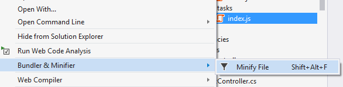
This adds the following lines into bundleconfig.json file in the .Web project:
{
"outputFileName": "wwwroot/js/views/tasks/index.min.js",
"inputFiles": [
"wwwroot/js/views/tasks/index.js"
]
}
And creates a minified version of the script:
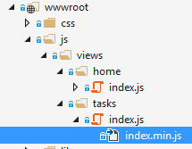
Whenever I change the index.js, index.min.js is automatically re-generated. Now, I can include the JavaScript file into my page:
@section scripts
{
<environment names="Development">
<script src="~/js/views/tasks/index.js"></script>
</environment>
<environment names="Staging,Production">
<script src="~/js/views/tasks/index.min.js"></script>
</environment>
}
With this code, our view will use index.js in development and index.min.js (minified version) in production. This is a common approach in ASP.NET Core MVC projects.
We can create integration tests that is also integrated to ASP.NET Core MVC infrastructure. Thus, we can completely test our server side code. You can skip this section if you don't interest in automated testing.
ABP startup template includes a .Web.Tests project to do that. I created a simple test to request to TaskController.Index and check the response:
public class TasksController_Tests : SimpleTaskAppWebTestBase
{
[Fact]
public async System.Threading.Tasks.Task Should_Get_Tasks_By_State()
{
//Act
var response = await GetResponseAsStringAsync(
GetUrl<TasksController>(nameof(TasksController.Index), new
{
state = TaskState.Open
}
)
);
//Assert
response.ShouldNotBeNullOrWhiteSpace();
}
}
GetResponseAsStringAsync and GetUrl methods are some helper methods provided by AbpAspNetCoreIntegratedTestBase class of ABP. We can instead directly use the Client (an instance of HttpClient) property to make requests. But using these shortcut methods makes it easier. See integration testing documentation of ASP.NET Core for more.
When I debug the test, I can see the response HTML:
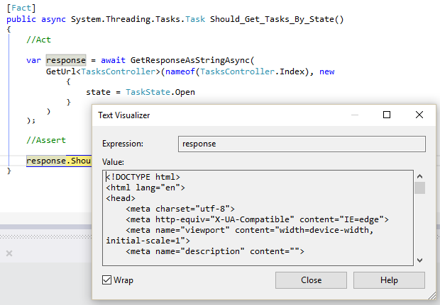
That shows the Index page returned a response without any exception. But... we may want to go more and check if returned HTML is what we expect. There are some libraries can be used to parse HTML. AngleSharp is one of them and comes as pre-installed in ABP startup template's .Web.Tests project. So, I used it to check the created HTML code:
public class TasksController_Tests : SimpleTaskAppWebTestBase
{
[Fact]
public async System.Threading.Tasks.Task Should_Get_Tasks_By_State()
{
//Act
var response = await GetResponseAsStringAsync(
GetUrl<TasksController>(nameof(TasksController.Index), new
{
state = TaskState.Open
}
)
);
//Assert
response.ShouldNotBeNullOrWhiteSpace();
//Get tasks from database
var tasksInDatabase = await UsingDbContextAsync(async dbContext =>
{
return await dbContext.Tasks
.Where(t => t.State == TaskState.Open)
.ToListAsync();
});
//Parse HTML response to check if tasks in the database are returned
var document = new HtmlParser().Parse(response);
var listItems = document.QuerySelectorAll("#TaskList li");
//Check task count
listItems.Length.ShouldBe(tasksInDatabase.Count);
//Check if returned list items are same those in the database
foreach (var listItem in listItems)
{
var header = listItem.QuerySelector(".list-group-item-heading");
var taskTitle = header.InnerHtml.Trim();
tasksInDatabase.Any(t => t.Title == taskTitle).ShouldBeTrue();
}
}
}
You can check the HTML deeper and in more detailed. But in most cases, checking the fundamental tags will be enough.
You can get the latest source code here https://github.com/aspnetboilerplate/aspnetboilerplate-samples/tree/master/SimpleTaskSystem-Core